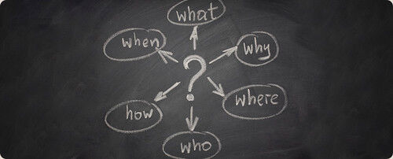
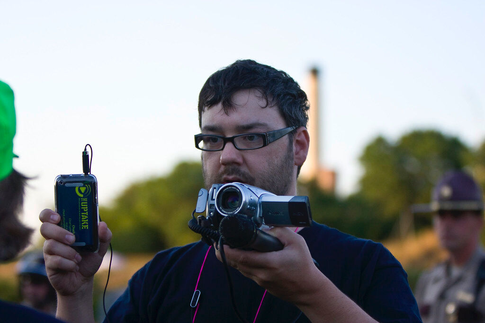

За полазнике
За тренере
За полазнике
За тренере
Модул 11: Новинарство, нове новинарске праксе и њихови утицаји на друштво
Опис модула
Основни циљ овог модула је да представи главне карактеристике новинарства, објасни утицај новинарских вредности и дефинише ефекте нових новинарских пракси на друштво.
Секундарни циљ је да усмери тренере који желе да користе садржај овог модула за обуку полазника.
Уз ове циљеве, представљене су информације о новинарству и његовим ефектима, заједно са смерницама о томе како да се предмет предаје:
- дефинишу новинарство са његовим циљевима и карактеристикама
- дефинишу вести и њихове вредности
- разумеју утицај новинарства на демократију
- разумеју нове новинарске праксе
- разумеју ново окружење у којем настају вести и његов утицај на људе.
Поред тога, тренери који успешно заврше овај модул, разумеће дефиницију и улоге новинарства, као и нове праксе које су се појавиле са променама медијског окружења.
Структура модула
Овај модул се састоји из следећих целина:
- Опис модула (циљеви, опис садржаја и исходи учења)
- Структурa модула
- Смернице за полазнике
- Смернице за тренере (како се припремити, методе које треба користити и савети за тренере)
- Садржај (материјал за учење и вежбање)
- Квиз
- Референце (цитирани извори, препоручени извори и видео-записи)
Главни циљеви модула, опис садржаја и исходи учења објашњени су у делу Опис модула. Смернице за полазнике укључују упутства и сугестије за полазнике. Смернице за тренере воде тренере кроз различите фазе обуке и дају савете који би могли да буду корисни током предавања предмета. Садржај обухвата све материјале за учење и вежбе везане за садржај. Квиз укључује питања на која се одговара са тачно или нетачно како би полазници тестирали свој напредак. Одељак Референце обухвата списак извора цитираних у садржају модула и листу додатних извора и видео-записа који се препоручују за читање и гледање како би се проширило знање о овој теми.
Смернице за полазнике
Од полазника се очекује да прочитају текст, погледају препоручене видео-записе и ураде вежбања. Они могу да консултују предложене ресурсе за додатне информације. Након проучавања садржаја, полазницима се препоручује да ураде квиз како би проценили свој напредак. Уколико је потребно, могу поново проучити материјал за учење.
Смернице за тренере
Смернице за тренере укључују сугестије и савете за тренере о томе како да користе садржај овог модула за обуку полазника о концепту новинарства, новим новинарским праксама и његовим ефектима на људе.
Припрема
Припремите презентацију (Пауерпоинт/Прези/Канва) која је обогаћена визуелним материјалима (слике и видео клипови) и чињеничним подацима заснованим на истраживању. Како би полазници боље разумели концепте, предлажемо да направите листе са препорученом литературом која је прилагођена вашој земљи.
Почетак
Како бисте увели полазнике у тему, на почетку можете користити кратак квиз (3 до 5 питања) направљен у Кахуту или им поставити питања путем Ментиметар апликације. Поменути квиз и питалице се могу користити као мотивационо средство и средство за проверу постојећег знања полазника о овој теми. Питања, на пример, могу бити: Која је улога новинара у друштву? Шта од наведеног се може посматрати као вредности вести?
Методологија
Током обуке могу се комбиновати различите наставне методе:
- Предавања
- Дискусије
- Рад у групама
- Самопроцењивање
Савети за тренере
Загревање
Ефикасан начин укључивања полазника и утврђивања заједничких очекивања о томе шта ће научити јесте постављање неколико прелиминарних питања о овој теми. Ово се може урадити кроз групни рад, тако што ћете замолити полазнике да дискутују и прикупе идеје, или кроз индивидуални рад, тако што ћете замолити сваког полазника да напише своје идеје на самолепљивим папирићима.
Активност се може спровести на следећи начин:
- Питајте полазнике да ли знају за везу између новинарства и демократије.
- Позовите полазнике да дају своје виђење везе између ова два појма.
- Питајте полазнике о њиховим искуствима у вези са новим медијским окружењем.
- Питајте полазнике да ли верују новинарима и упутите их да разговарају о својим разлозима.
Представљање циља лекције
Циљ лекције треба да буде јасан (да се опишу главне карактеристике новинарства, објасни утицај новинарских вредности и дефинишу ефекти нових новинарских пракси на друштво). Након питања за загревање, лакше ћете разјаснити циљеве.
Представљање садржаја лекције
Приликом представљања садржаја, водите рачуна о интеракцији са полазницима и подстакните их на активно учешће.
- Пре него што дате дефиницију новинарства и вести, замолите учеснике да осмисле своје.
- Када представљате информације о променама у новинском окружењу, замолите учеснике да их прво елаборирају.
- Пре него што дате информације о новим новинарским праксама, питајте учеснике да ли су упознати са њима, као и преко којих новинских платформи проналазе вести.
- Када представљате информације о ефектима промене медијског окружења, питајте учеснике да ли су свесни ових ефеката и охрабрите их да разговарају о овим питањима.
Закључак
Направите кратак резиме лекције и поставите неколико питања која ће помоћи да истакнете најважније поруке које желите да пренесете. Следећа питања могу помоћи:
- Питајте полазнике какву претњу за друштвa представља „лоше” новинарство.
- Питајте полазнике да ли су вољни да сазнају више о евалуацији вести или било које врсте информација. Ово може помоћи да их припремите за следеће модуле о провери чињеница.
Садржај: Новинарство, нове новинарске праксе и њихови утицаји на друштво
Увод: Шта је новинарство?
Новинарство се може дефинисати као “пракса прикупљања, евидентирања, провере и извештавања o информацијама од јавног значаја”. Идеја “објективности” је основно дистинктивно својство новинарске праксе у поређењу са другим нефикцијским (некњижевним) писањем. Од новинара се очекује:
- Да задрже објективан начин размишљања током интервјуа, свог истраживања, извештавања својих прича
- Да не убеђују своје читаоце, већ да их информишу
- Да пронађу примарне изворе како би стекли увид (попут интервјуисања људи који су првенствено погођени инцидентом, писаних доказа, архивске грађе, итд.).
Мишљења се такође могу укључити у новинарске праксе, али новинари морају бити свесни и пажљиви да субјективност буде ограничена на делове као што су уводници, колумне или други садржај заснован на мишљењу (Purdue University, n.d.).
EНачини конзумирања свих врста информација укључујући вести, драматично су се променили, а нарочито у дигиталном добу. Ово је такође утицало на новинарску праксу у смислу прикупљања информација за производњу вести и њихово ширење, док су њихове основне дужности остале доследне. Данашњи новинари не само да пишу традиционалне новинске текстове, већ обављају различите улоге као што су креирање подкаста или Јутјуб видео-записа, документарних филмова, а помажу и у 24-часовном емитовању (путем ТВ-а или других канала друштвених мрежа), како би нам помогли да будемо у току са вестима, посебно преко интернета. Ови напори помажу јавности да сазна шта се дешава у свету како би могла да доноси информисане одлуке (Purdue University, n.d.).
Улога новинара и новинарска етика
“Централни циљ новинарства је да грађанима пружи тачне и поуздане информације које су им потребне како би функционисали у слободном друштву.” (Potter, 2006, стр. 3)
Информисани грађани су окосница демократије. Људима су потребне информације да би управљали собом, a новинари и новински медији су примарни извор за то. Како би осигурале да новинари могу слободно да раде свој посао, многе земље су успоставиле законску заштиту слободе штампе (Potter, 2006, стр. 2).
Кликните овде да бисте проверили рангирање ваше земље на Светском индексу слободе медија.
Новинари у слободном друштву такође имају ову заједничку одговорност: да информишу грађане. При томе, новинари морају да дају тачне информације, да извештавају поштено, потпуно, независно од спољних утицаја и да буду потпуно непристрасни приликом прикупљања информација и презентовања вести (Potter, 2006, стр. 2; Quandt & Singer, 2009, стр. 140).
“Новинари нису само преносиоци за своја гледишта или информације које пружају други. Они врше изворно извештавајње, не мешају чињенице са мишљењем или гласинама и доносе здраве уредничке одлуке. Главна одговорност новинарства... је ‘примена расуђивања на информације’.”(Potter, 2006, стр. 9)
У данашње време, свако ко има уређај повезан на Интернет може да шири било коју информацију путем блога, веб-сајта или друштвених мрежа, и може да досегне широку публику колико и највећи новински центри. Међутим ови извори вести нису нужно поуздани. Огромна количина информација чини “истину” нејасном за већину људи. Стога је улога новинара постала важнија него икада за демократско друштво. Природа професије приморава новинара да:
- Изабере поуздан извор и информације
- Ослони се на запажања из прве руке кад год је то могуће
- Консултује више извора и провери информације
- Одреди вредност информација пре него што их подели са јавношћу
- Извештава тачно, објективно и поштено
- Идентификује и представи изворе (осим у ретким приликама) информација до којих је дошао, како би публика могла да процени њихову веродостојност (Potter, 2006, стр. 8-9).
Као професија која зависи од информација, новинари своју примарну оданост дугују јавности (Potter, 2006, стр. 2). Јавно описмењавање је дужност новинара и то је изузетно важно за правду и темељ демократије (Society of Professional Journalists, 2014). Новинарска етика има за циљ да утврди на који начин се постојеће норме примењују на главна свакодневна етичка питања (Ward, 2009, стр. 296).
Поједини етички кодекси за новинарство су представљени преко различитих извора како би се осигурала слободна размена информација која је тачна, правична и темељна. Према Друштву професионалних новинара, могу се груписати у четири основна принципа (Society of Professional Journalists, 2014):
- Тражите истину и известите о њој: Етичко новинарство треба да буде прецизно и правично. Новинари треба да буду поштени и храбри у прикупљању, извештавању и тумачењу информација.
- Минимизирајте штету: Етичко новинарство третира изворе, актере, колеге и чланове јавности као људска бића која заслужују поштовање.
- Делујте независно: Највиша и примарна обавеза етичког новинарства је да служи јавности.
- Будите одговорни и транспарентни: Етичко новинарство значи преузимање одговорности за свој рад и објашњавање својих одлука јавности.
“Последњих година, видели смо колапс идеје да политички релевантне чињенице могу да разазнају медијски професионалци, остављајући гласаче несигурним да ли се порукама које су пренели ти професионалци може веровати. ... Друштвене мреже су омогућиле појединцима и малим организацијама да шире поруке (можда тачне, можда лажне) директно бирачима, без посредовања великих новинских организација. ...Све ово значи да су бирачи приморани да идентификују изворе вести којима верују. Како различити извори вести шире различите поруке о истим стварима, бирачи ће сада имати више различитих погледа на стварност него што је то био случај деценијама раније. Џон Кросник (Source: Feder, 2020)
“Истина” је једно од главних питања у новинарству. Дискусије о концепту “истине“ су забрињавајуће порасле, а посебно у последњој деценији. Заправо, види се да ни грађани цивилизованих друштава не могу да се сложе ни око неких основних чињеница. У овом тренутку, боље је разумети дефиницију “новинарске” истине. Попут научника, новинари трагају за истином која објашњава свет и помаже људима да функционишу у животу. Циљ новинара је да пронађе најбољу могућу верзију истине у датом дану. Да би то урадили, новинари морају да прикупе што је могуће више доказа. Овде је “могуће” велики предуслов, јер новинари раде у строгим роковима. Они морају да прикупе доказе за истину у кратком временском року. Стога би новинари и корисници вести увек требало да постављају питање: “Да ли постоје релевантнији докази који се могу практично прикупити?” (Hornik, Anzalone & Spikes, 2018, стр. 32-33)
Корисници вести би требало да имају у виду да се прича временом може променити. У таквим случајевима као што су природне катастрофе, прича се мора пратити како би се сагледале најновије информације, као што је број смртних случајева или ефикасност политичког одговора. Ови детаљи ће вероватно бити ревидирани временом, не зато што је репортер погрешно пренео чињенице, већ зато што се прича временом развија и појављују се нове чињенице. Као потрошач вести, ако неко жели да сазна истину, та особа треба да буде активан члан публике тиме што ће енергично пратити питања и теме и захтевати даљу истрагу прича од информативних медија (Hornik, Anzalone & Spikes, 2018, стр. 35)
Вести и информативне вредности
Да ли се вест може дефинисати као “информација за коју раније нисте знали”? Да ли је то чини “веродостојном”, само зато што нешто раније нисте знали или зато што је нешто ново? Док размишљате о дефиницији вести, можда ћете затећи себе да постављате питања о томе како да неку информацију учините занимљивом или вредном објављивања: Да ли је ово информација о некоме кога познајете или о вашем комшилуку? Да ли директно утиче на ваш живот? Да ли нешто мења (на пример, ваше мишљење или одлуке)? Постоје ли било какви сукоби? Да ли је сматрате чудном или бизарном? Као особа која конзумира вести, можда ћете поставити неколико питања ако морате да означите неку информацију као вест. Попут вас, и новинари постављају слична питања како би одлучили шта је вредно да се објави као вест, и одредили “информативне вредности” (Gillman, 2015, стр. 280).
"News" Аутор: popcornartsgfx доступно под лиценцом CC BY 4.0
Информативне вредности се не користе само за доношење одлука о укључивању и искључивању неке информације или материјала, већ и о томе како ће вест бити покривена, ко је саставља и како ће се објавити на новинској платформи (као нпр. у новинама или на веб страници). Штавише, новинари и други медијски стручњаци приликом процене информативне вредности вести, узимају у обзир основне критеријуме који укључују ко, шта, где, када, зашто и како. Иако се информативне вредности понекад могу означити као “клизав терен”, то није спречило новинаре да их испрате или истраживаче да покушају да направе неколико категорија како би разјаснили концепт (O’Neill & Harcup, 2009, стр. 162-163; Gillman, 2015, стр. 286). Ове вредности су другачије наведене у различитим изворима, али суштина је следећа (Potter, 2006, стр. 5; Gillman, 2015, стр. 282-283):
- Правовременост/актуелност: Ако се нешто недавно догодило, то може бити вредно објављивања. Правовременост зависи од медија (нпр. “недавно” може значити другачије за недељни часопис или информативни канал).
- Утицај: Ако постоји снажан емоционални одговор публике након неког догађаја (као што је убиство жене од стране њеног бившег партнера) или је много људи погођено инцидентом (као што је поплава у граду или пандемија ковид-19 ), то се може сматрати вестима.
- Људски интерес: Новинари разматрају да ли су информације друштвено интересантне или важне. Инцидент на одбојкашкој утакмици може бити у вестима неколико дана, јер је то главна тема разговора у друштву.
- Новина: Информације које откривају нешто што је ретко, необично или чак бизарно су потенцијално вредне вести, јер чудни догађаји привлаче људску радозналост. Као у чувеној изреци “Ако пас уједе човека, то није новост. Али ако човек уједе пса, то је вест!”
- Контроверза / Конфликт: Људска природа је заинтересована за приче које садрже конфликт, напетост или јавну дебату. Конфликт није само сукоб контроверзних мишљења, већ и прича о лекару који се бори са болешћу или грађанима који се противе неправди.
- Истакнутост: Ако је позната личност укључена у догађај, чак и ако је то обична ствар, ово може постати вест. Локална саобраћајна несрећа могла би да буде на насловним странама широм света и неколико дана ако би возач био познати музичар.
Информативне вредности се могу посматрати као оквир за анализу добијених информација, како би се одлучило да ли су вредне објављивања. Када се узме у обзир доба у којем живимо и да смо бомбардовани информацијама, корисници вести би требало да усвоје ове критеријуме да анализирају, разумеју и одлучују о врсти информација и њиховој веродостојности, уместо да доносе одлуке или разумеју свет на основу личних искустава. Треба имати на уму да су “вести” производ низа рационалних судова новинара или других медијских стручњака и људи би требало да конзумирају ову врсту информација доносећи сличне судове, посебно у овој ери пост-истине (Gillman, 2015, стр. 286).
Мењање карактеристика вести
Вести могу да настану на више начина, али новинари углавном налазе вести у једном од следећих окружења (Potter, 2006, стр. 7):
- Догађаји који су се десили природним путем, као што су несреће, катастрофе, итд.
- Планиране прилике, као што су састанци, конференције, итд.
- Труд новинара.
Вести су данас део умрежене јавне сфере, другим речима, екосистема међусобно повезаних платформи које проширују опсег партиципативног дискурса. Новинарски производи који су некада били ексклузивни, као што су вести, мишљења, подаци, информације, наслови, новости и разговори, сада су свуда у данашњем комуникационом екосистему (Perloff, 2020, стр. 25-26). Као резултат дигитализације:
- Садржај вести се може дистрибуирати преко већег броја платформи и на много бржи начин
- Садржај вести се може учинити интерактивним
- Садржај вести са различитих платформи може бити укључен у један новински извештај
- Потрошачи вести могу добити алате за медијску продукцију, бришући тиме границе између медијске производње и потрошње (Bainbridge, Beasley & Tynan, 2015, стр. 67-69).

"who-will-use-your-iphone-or-ipad-app" Аутор: Ramotionblog доступно под лиценцом CC BY-ND 2.0
Проналазак телеграфа пре скоро 150 година променио је начин преношења информација. Технологија je донeла технику писања/извештавања по принципу “обрнуте пирамиде” где су најважнији подаци на почетку приче, затим мање важни подаци и тако до краја, што омогућава да се прича пресече одоздо како би се уклопила у расположиви простор.
Ово је садржано у формату “ко, шта, где, када, зашто и како” посебно у штампаним вестима (обично “шта” и “ко” имају предност) што помаже да се информација хијарархијски изложи и садржај уклопи у границе које диктира изглед (распоред) странице. Иако су поједини извори тврдили да је овај стил писања нестао са појавом “меких вести” које се шире путем нових медија заснованих на интернету, чини се да ће се и даље користити, јер омогућава преношење информација на компактан начин (Tynan, 2015, стр. 337; Goc, 2015a, стр. 33; Scanlan, 2003).
“Озбиљност (ковид-19 пандемија) кризе појачала је потребу за поузданим, тачним новинарством које може да информише и образује становништво, али нас је такође подсетила колико смо постали отворени за завере и misинформације. Новинари више не контролишу приступ информацијама, док све веће ослањање на друштвене мреже и друге платформе даје људима приступ ширем спектру извора и ‘алтернативних чињеница’, од којих су неке у супротности са званичним саветима, обмањујуће или једноставно нетачне” (Newman, 2020, стр. 10)
Термин дигитални медији или нови медији се користи да дефинише мобилне технологије (као што су мобилни телефони) и медије засноване на интернету (као што су сајтови друштвених мрежа, платформе за онлајн игре, онлајн емитовање и новинске платформе и апликације, итд.). Ове платформе обично подстичу своје кориснике да буду друштвено ангажовани, стварајући неку врсту мреже публике. Ове мреже публике озбиљно доводе у питање старе моделе емитовања и начин на који комуницирамо (на пример, Фејсбук је имао скоро 1,9 милијарди активних корисника дневно током другог квартала 2021 (Statista Research Department, 2021). Штавише, дигитални медији гурају људе да изузетно брзо конзумирају све врсте садржаја. Како ове платформе промовишу културу, на основу интерактивности и виртуелности, може се рећи да оне такође делују као друштва која мењају (Bainbridge, Beasley & Tynan, 2015, стр. 67-69).
Широм света, навике које се односе на конзумирање вести драстично су се промениле од почетка масовне употребе интернета. Конвенционални медији, као што су штампане новине, ТВ преноси, почели су да уступају своје место друштвеним мражама и другим онлајн платформама, посебно у поређењу са прошлом деценијом (Newman, 2021, стр. 10). То значи да чекање да се вести ујутру појаве у новинама или да се емитују у редовној информативној емисији ТВ канала, за већину људи више није прихватљиво (Bainbridge, Beasley & Tynan, 2015, стр. 67-69).
Ово дигитално окружење трансформисало је карактеристике вести на следећи начи (Perloff, 2020, стр. 22; Bainbridge, Beasley & Tynan, 2015, стр. 68-69):
- Архитектура вести је вишезначна. Може варирати од веома детаљних у смислу информација које садржи до укључивања неистина.
- Стилови писања вести су почели да се мењају.
- Стварање осећаја актуелности постало је важније како су вести почеле да се шире дигиталним и друштвеним мрежама. Новинари су склони да придају мање значаја питању “када” у причи. Ове информације се обично налазе у каснијим пасусима вести, уместо у уводу или наслову. Овај осећај актуелности значи да се вест може ажурирати током одређеног временског периода.
- Атрибути приче, “ко”, “шта” и “где” (као што су имена људи, места) постали су истакнутији, а некада су се налазили у каснијим пасусима вести уместо у уводу или наслову. Сврха оваквих вести је да претраживачи запазе њихов садржај.
- Новинари не морају да чекају да званична редакција одобри и емитује причу, јер најчешће имају своје налоге на друштвеним мрежама. Међутим, треба имати на уму да када новинари твитују посебно током кризе, њихов начин писања би могао бити субјективнији и њихова мишљења би могла да доминирају датим контекстом уместо чињеница.
- Традиционалне вести су још увек важне, али више нису водећи чувар капије (енг. gatekeeper). Окружене су (понекад преплављене) различитим платформама друштвених мрежа које мењају начин на који се вести проналазе и конзумирају. Праћење низа локалних упозорења, новинара може довести до откривања нове приче. Међутим, коришћењем паметног телефона, свако би могао да прати ту врсту ванредних вести, јер се већина садржаја може прилагодити локацији и може се без напора добити укључивањем обавештења на мобилној апликацији. Ово такође има импликације на то ко производи вести, јер грађанин-новинар има подједнаке шансе да пренесе причу као и традиционална редакција.
- Производња и ширење вести више није монопол медијских професионалаца. Људи могу лако да буду део овог процеса само коришћењем својих телефона, што доноси нове гласове новинарској пракси (видиSee: “Нови облици новинарства”).
- Вести које је некада било лако категоризовати постале су сложеније како се категорије новинарства мењају (види: “Нови облици новинарства”).
Нови облици новинарства
У данашњем дигиталном свету, новинари и даље морају да прикупљају информације и креирају вести које морају да буду засноване на чињеницама, тачне, информативне, поштене и занимљиве. Захваљујући интернету, новинарима су доступне нове могућности за извештавање, тумачење, дељење и ажурирање вести. Тако је новинарство постало глобална активност 24 сата дневно, 7 дана у недељи, и која не мора да буде ограничена физичком канцеларијом или редакцијом. Штавише, у данашњем дигиталном окружењу, потрошачи вести захтевају да добију вести са различитих платформи као што су Фејсбук или Твитер. Ови нови типови заједница (које се називају “виртуелна гомила”) захтевају интерактивност (желе да буду укључени у вести од њихове производње до преноса), потребне су им информације у реалном времену без икаквих географских ограничења и углавном у визуелним или аудио-визуелним облицима (Bainbridge, Beasley & Tynan, 2015, стр. 91; Goc & Tynan, 2015, стр. 392; Kochler, 2017, стр. 11). Од новинара се не очекује само да креирају тачне вести у краћим временским оквирима него у прошлости, већ и да буду активно повезани са публиком на различитим платформама. Ово је резултирало следећим концептима:
- мултидимензионално / мултимедијално новинарство, где новинари користе дигиталне платформе (као што су блогови, друштвене мреже, веб-сајтови, мобилне апликације) и за добијање информација како би произвели вести и ширили их у јавности (Bainbridge, Beasley & Tynan, 2015, стр. 91; Goc & Tynan, 2015, стр. 392),
- јавно новинарство / грађанско новинарство / партиципативно новинарство / ангажовано новинарство / локално новинарство / умрежено новинарство, које демонстрира нови облик новинарства који се фокусира на потребе заједнице којој служи тако што јој такође омогућава да активно креира агенду и буде део процеса креирања вести (Coddington & Lewis, 2021; Philips, 2015, стр. 90-91).

"Chuck on the scene - Citizen journalism" Аутор: Tony Webster доступно под лиценцом CC BY 2.0
Нова моћ корисника вести, која их чини грађанима новинарима, доноси јавности различите могућности и предности. На пример, у ратној зони ове добровољне групе могу да обавештавају свет у реалном времену тачно из попришта бомби. Ови грађани новинари углавном раде без плата и добровољно, и могу да производе вести превасходно на мрежи у различитим облицима, од добро произведених подкаста или Јутјуб канала до уредничких коментара на блоговима или Твитеру обухватајући теме које се вредне пажње. Међутим, нове технологије увек заоштравају сукоб између брзине и тачности које су срж традиционалних новинарских пракси. Моћ информација може нанети велику штету људима и друштвима ако се злоупотреби. Стога корисници вести морају да приступе овим новим типовима новинарских активности тако што ће размишљати критичније и двапут размислити пре него што прошире информације другима (Goc, 2015b, стр. 489; Hornik, Anzalone & Spikes, 2018, стр. 160-161). С друге стране, на пример, грађани новинари такође могу помоћи медијима да исправе своје грешке тако што ће допринети извештавању. На пример, у Египту, брзо ширење непроверених информација на интернету учинило је грађане репортере неком врстом инспекцијског механизма који је могао да идентификује нетачне информације или пристрасности у вестима (Chan, 2014, стр. 116). У том смислу, уколико грађани новинари могу да интернализују и усвоје основне вредности новинарства, у извесној мери, пристрасне вести се могу спречити, а овај покушај ширења чињеничних информација такође може бити важан допринос демократији.
Експанзијом дигитализације, веће количине информација више него икада раније су произведене, ускладиштене и приступа им се, што је формирало концепт “big data”. Ово ствара нове могућности за анализе за многе професије, укључујући новинаре, да доносе поуздане одлуке, да граде рационалне процедуре и тако даље. Новинари су данас у могућности да пронађу доказе и изнесу невидљиве чињенице или увиде о некој теми радећи са огромним количинама података, како би разумели како резултати могу да утичу на јавност (нпр. Викиликс). На овај начин, они истражују приче које су закопане на интернету и које иначе не би биле откривене. Ово наравно захтева нове новинарске вештине и специјализације. Ови професионалци се генерално називају “податковни новинари” (енг. data journalists ; (познато и као компјутерски потпомогнуто извештавање) (Bainbridge, Beasley & Tynan, 2015, стр. 69, 91).
Утицај медија на људе
Најновија информациона револуција је трансформисала свет, тако што је омогућила објављивање било које информације путем рачунара или паметног телефона. Људи су затрпани огромним количинама информација. Ово није повезано само са напретком у здравству, образовању или друштвеном ангажману, који углавном чине свет бољим местом, већ велики део тих информација може резултирати заблудама (као што су покрети против вакцинације) које могу да нанесу огромну штету јавности. Дакле, “доба информација” нас суочава са следећим значајним изазовима који нас приморавају да преиспитамо начине на које конзумирамо и делимо информације (Hornik, Anzalone & Spikes, 2018, стр. 11-12):
- Преоптерећеност информацијама: Количина информација отежава више него икад разликовање поузданих информација од измишљених.
- Криза аутентичности: Помоћу нових технологија могуће је и лакше креирати и ширити мисинформације које изгледају аутентично.
- Брзина наспрам тачности: Људи желе да добију информације што је брже могуће, што повећава шансе да информације бити нетачне.
- Пристрасност публике: Људи имају тенденцију да конзумирају и верују у информације које подржавају њихове већ постојеће идеје (види Модул 3 за више детаља).
“Људи ће радије поделити чланак него што ће га прочитати... Ово је типично за савремено конзумирање информација. Људи формирају мишљење засновано на резимеу, или резимеу сажетака, не улажући труд да зађу дубље.”
(Dewey, 2016)
Како било која врста информација, укључујући вести, више није монопол ниједне професије, људи су се нашли сами у поплави информација и поједине природне когнитивне предрасуде постале су део свакодневне рутине конзумирања информација (види Модул 3 за више детаља). Друштвене мреже су преузеле водећу улогу као извор вести, а вести се такође анализирају на друштвеним мрежама. То значи да људи не наилазе на једну причу из одређеног извора вести, већ помешану са садржајем из многих других извора. Ово је сасвим другачије од гледања вести или читања новина, где сав садржај долази из истог извора (American Press Institute, 2016, стр. 20). Еволуција потрошача вести у произвођача вести повећала је ширење мисинформација (Hornik, Anzalone & Spikes, 2018, стр. 155). Нарочито током кризе, углавном због природног инстинкта за преживљавање, људи имају тенденцију да врло брзо шире било какву информацију како би заштитили себе и своје најмилије. Према једној студији, 59 процената линкова на друштвеним мрежама се дели без претходног читања. Такође је откривено да је ова врста акције “дели чак и без кликтања” веома важна у одређивању које ће вести кружити, а које само нестати са радара јавности. То значи да ова навика дељења заправо обликује заједнице са заједничким политичким и културним агендама, без чврсте позадине (Dewey, 2016). У повезаном истраживању, испитани су мотиви људи за дељење информација и откривени су следећи мотиви (Stearns, 2016):
- Људи желе да помогну: Због фидова друштвених мрежа, изузетно много ударних вести доминира људским животима као никада раније. Овај садржај може бити било шта, од писаних информација до видео-записа, углавном нефилтрираних и необрађених. Резултат може бити “растући осећај беспомоћности”. Већина људи када се суочи са трагедијом, жели да помогне другима ширећи информације што је брже могуће и упозоравајући своје пратиоце, што углавном помаже да се хаосу дода контекст. Журба за дељењем без провере било које информације може више да повреди друге него што може да помогне.
- Људи желе да схвате свет: Када се емитују ванредне вести, више је непознатог него познатог. Људи имају тенденцију да разговарају са другим људима како би разумели шта се дешава, да би потврдили причу у својим умовима или потврдили свој поглед на свет, што се генерално завршава ширењем гласина као да су чињенице. У таквим временима, гласине су нека врста механизма суочавањa којим се попуњавају празнине у тренутном знању или добијеним информацијама, посебно у ситуацијама опасности и неизвесности.
- Људи желе да буду део заједничког искуства: Када су људи изазвани двосмисленошћу, безнађем или анксиозношћу, они се углавном окупљају у дигиталној гомили око онлајн стримова који се врше уживо или хештегова. Током ових времена, дељење често изгледа као емпатија. У таквим случајевима, журба да поделите своја осећања углавном се завршава дељењем манипулисаних слика и мисинформација о инциденту, јер за особу која дели, то не мора да буде истинито, само треба да оставља утисак истинитог.
- Емоционалне мреже уместо информационих мрежа: Иако је лако судити о људима који шире мисинформације током кризе, у стварности инстинкт за дељењем је вођен сложеном мрежом мотива и емоција. Емоције подстичу дељење на начине који отежавају потрагу за истином у тренутку кризе. Разлог за већину људи, који шире мисинформације дељењем, је углавном да су више заинтересовани за емоције које информације изазивају. У прошлости, да је то урадила нека институција, то би било “лоше новинарство”. Када друштвене мреже функционишу и као емоционалне и као информативне мреже, то постаје проблем. Оно што људи деле (емоције) и оно што људи желе да пронађу (чињенице) често је супротстављено.
Вести такође могу да преплаве појединце, јер се генерално лоше вести шире брже од добрих (Bushman, Williams & Wittenberg-Moerman, 2013, стр. 29). У ери у којој се људи често суочавају са лошим вестима, неки психолошки утицаји су неизбежни, попут растућег осећаја беспомоћности, гледања на свет као мрачнијег места, песимистичнијег став према могућностима, итд. У таквој психологији, процес доношења одлука може бити угрожен (Singal, 2014) и то може утицати на различите важне тренутке у животу, који могу да укључују резултате избора или одлуку да се буде део покрета против вакцинације. Све већи број људи изјављује да избегава вести како би ово превазишли (Dahl & Riesman, 2014). Једна од студија је открила да скоро једна трећина (32%) људи из целог света намерно избегава вести (Newman, 2019, стр. 26). Према неким извештајима, они избегавају вести зато што их сматрају превише тужним или стресним, и зато што им не верују (Coddington & Lewis, 2020).
Да би превазишли ове изазове, људи морају да аналитичније приступе информацијама, користећи следеће принципе које би требало применити на све врсте информативних медијских платформи у свакодневном животу (Hornik, Anzalone & Spikes, 2018, стр. 11, 161; Singal, 2014):
- Преиспитајте добијене информације уместо да их једноставно конзумирате.
- Будите стрпљиви и пратите причу, како се чињенице појављују и истина почиње да излази на видело.
- Проверите информације пре него што их поделите на било којој платформи или с било ким.
- Не сматрајте ранг и популарност као замену за поузданост информација.
- Имајте на уму чињеницу да пошиљалац информације често није њен извор.
- Будите свесни имплицитних предрасуда људске спознаје које сви носимо.
- Имајте на уму да разлог за суочавање са бројним лошим вестима није нужно зато што је свет инхерентно зло место, већ зато што медијске куће и потрошачи могу имати подстицаје да емитују негативне вести.
Ови детаљи не само да ће помоћи новинарима да буду одговорни према јавности којој служе и информишу (Hornik, Anzalone & Spikes, 2018, стр. 11) већ ће такође помоћи јавности да подигне свест о медијском окружењу и стекне нове вештине како би да опстала у овој ери постистине.
Вежбање
- Кликните овде да бисте проверили рангирање ваше земље на Светском индексу слободе медија. Разговарајте о критеријумима и индикаторима индекса. Шта мислите о предностима или манама када сте на врху или на дну ове листе?
- Идентификујте вести са различитих платформи као што су веб странице локалних и националних новина и друге врсте онлајн новинских платформи (новинске куће). Покушајте да донесете суд о информативним вредностима сваке приче. На пример, да ли сте причу која је објављена открили због њене упућености циљним пратиоцима/читаоцима платформе за вести или новина? Да ли сте видели неке приче које су објављене због истакнутости једне или више особа које су представљене у причи?
Квиз
Референце
American Press Institute, (2016). A New Understanding: What Makes People Trust and Rely on News. Retrieved from: https://www.americanpressinstitute.org/wp-content/uploads/2016/04/What-Makes-People-Trust-and-Rely-on-News-Media-Insight-Project.pdf.
Bainbridge, J., Beasley, C. & Tynan, L. (2015). The Digital and Social Media Environment. In Bainbridge, J., Goc, N I., & Tynan, L. (Eds.). Media and Journalism: New Approaches to Theory and Practice (pp. 65-92). Melbourne: Oxford University Press.
Bushman, R.M. Williams, C.D. & Wittenberg-Moerman, R. (2013). The Informational Role of the Media in Private Lending. Retrieved from: http://www.utah-wac.org/2014/Papers/williams_UWAC.pdf.
Chan, Y.Y. (2014). Journalism and Digital Times: Between Wider Reach and Sloppy Reporting. Retrieved from: https://www.academia.edu/9774272/Journalism_and_Digital_Times_Between_Wider_Reach_and_Sloppy_Reporting.
Coddington, M & Lewis, S. (2021, May 11). Why do people avoid news? It’s not just because it makes them feel bad. NiemanLab. Retrieved from: https://www.niemanlab.org/2021/05/why-do-people-avoid-news-its-not-just-because-it-makes-them-feel-bad/.
Coddington, M. & Lewis, S. (2020, March 6). Why avoiding the news is a social habit. RQ1. Retrieved from: https://rq1.substack.com/p/why-avoiding-the-news-is-a-social.
Dahl, M. & Riesman, A. (2014, August 8). What news story are you most freaked out about? The Cut. https://www.thecut.com/2014/08/what-news-story-are-you-most-freaked-out-about.html.
Dewey, C. (2016, June 16). 6 in 10 of you will share this link without reading it, a new, depressing study says. Washington Post. Retrieved from: https://www.washingtonpost.com/news/the-intersect/wp/2016/06/16/six-in-10-of-you-will-share-this-link-without-reading-it-according-to-a-new-and-depressing-study/.
Feder, S. (2020, February 27). Stanford researchers discuss journalism and democracy in lead up to Super Tuesday. Stanford News. Retrieved from: https://news.stanford.edu/2020/02/27/journalism-and-democracy/.
Gillman, S. (2015). News Values and News Culture in a Changing World. In Bainbridge, J., Goc, N I., & Tynan, L. (Eds.). Media and Journalism: New Approaches to Theory and Practice (pp. 280-293). Melbourne: Oxford University Press.
Goc, N. (2015a). The First Mass Medium. In Bainbridge, J., Goc, N I., & Tynan, L. (Eds.). Media and Journalism: New Approaches to Theory and Practice (pp. 24-44). Melbourne: Oxford University Press.
Goc, N. (2015b). Case Study 5: Free Speech and Journalism in the 21st Century. In Bainbridge, J., Goc, N I., & Tynan, L. (Eds.). Media and Journalism: New Approaches to Theory and Practice (pp. 485-491). Melbourne: Oxford University Press.
Goc, N. & Tynan, L. (2015). Ethics in Communication. In Bainbridge, J., Goc, N I., & Tynan, L. (Eds.). Media and Journalism: New Approaches to Theory and Practice (pp. 382-404). Melbourne: Oxford University Press.
Hornik, R., Anzalone, J. & Spikes, M. (2018). GetNewsSmart: A Guide to Understanding the Key Concepts of News Literacy. New York: The Center for News Literacy.
Kochler, H. (2017). Idea and politics of communication in the global age. In M. Friedrichsen & Y. Kamalipour (Eds.). Digital Transformation in Journalism and News Media, Media Business and Innovation (pp. 7-16). Cham: Springer.
Newman, N. (2019). Section 1: Executive summary and key findings. In N. Newman, R. Fletcher, A. Kalogeropoulos ve R. K. Nielsen (Eds.), Reuters Institute Digital News Report 2019 (pp.8-31). Reuters Institute for the Study of Journalism. Retrieved from: https://reutersinstitute.politics.ox.ac.uk/sites/default/files/inline-files/DNR_2019_FINAL.pdf.
Newman, N. (2020). Section 3: Country and market data: Europe. In N. Newman, R. Fletcher, A. Schulz, S. Andı & R. K. Nielsen (Eds.), Reuters Institute Digital News Report 2020 (pp.9-31). Reuters Institute for the Study of Journalism. Retrieved from: https://reutersinstitute.politics.ox.ac.uk/sites/default/files/2020-06/DNR_2020_FINAL.pdf.
Newman, N. (2021). Executive summary and key findings. In N. Newman, R. Fletcher, A. Schulz, S. Andı, C.T. Robertson & R.K. Nielsen (Eds.), Reuters Institute Digital News Report 2021 (pp.9-30). Reuters Institute for the Study of Journalism. Retrieved from: https://reutersinstitute.politics.ox.ac.uk/sites/default/files/2021-06/Digital_News_Report_2021_FINAL.pdf.
O’Neill, D. & Harcup, T. (2009). News values and selectivity. In K. Wahl-Jorgensen, & T. Hanitzsch (Eds.). The Handbook of Journalism Studies (pp. 161-174). New York: Routledge.
Perloff, R.M. (2020). The Dynamics of News: Journalism in the 21st-Century Media Milieu. New York: Taylor & Francis.
Philips, A. (2015). Journalism in Context: Practice and Theory for the Digital Age. London: Routledge.
Potter, D. (2006). Handbook of Independent Journalism. Washington, DC: Bureau of International Information Programs, U.S. Department of State.
Purdue University. (n.d.). Journalism and Journalistic Writing: Introduction. Retrieved from: https://owl.purdue.edu/owl/subject_specific_writing/journalism_and_journalistic_writing/index.html.
Quandt, T. & Singer, J.B. (2009). Convergence and cross-platform content production. In K. Wahl-Jorgensen, & T. Hanitzsch (Eds.). The Handbook of Journalism Studies (pp. 130-144). New York: Routledge.
Scanlan, C. (2003). Birth of the Inverted Pyramid: A Child of Technology, Commerce and History. Retrieved from: https://www.poynter.org/reporting-editing/2003/birth-of-the-inverted-pyramid-a-child-of-technology-commerce-and-history/.
Singal, J. (2014, August 8). What all this bad news is doing to us. The Cut. Retrieved from: https://www.thecut.com/2014/08/what-all-this-bad-news-is-doing-to-us.html.
Society of Professional Journalists (2014). SPJ Code of Ethics. Retrieved from: https://www.spj.org/ethicscode.asp.
Statista Research Department. (2021). Facebook: Number of Daily Active Users Worldwide 2011-2021. Retrieved from: https://www.statista.com/statistics/346167/facebook-global-dau/.
Stearns, J. (2016). Why do People Share Rumours and Misinformation in Breaking News? Retrieved from: https://firstdraftnews.org/articles/people-share-misinformation-rumors-online-breaking-news-events/.
Tynan, L. (2015). Subediting, News Language and Convention. In Bainbridge, J., Goc, N I., & Tynan, L. (Eds.). Media and Journalism: New Approaches to Theory and Practice (pp. 330-350). Melbourne: Oxford University Press.
Ward, S.J.A. (2009). Journalism ethics. In K. Wahl-Jorgensen, & T. Hanitzsch (Eds.). The Handbook of Journalism Studies (pp. 295-309). New York: Routledge.
WikiLeaks. (2021, September 13). In Wikipedia. Retrieved from: https://en.wikipedia.org/w/index.php?title=Oil_painting&oldid=929802398.
Препоручени извори
Potter, D. (2006). Handbook of Independent Journalism. Washington, DC: Bureau of International Information Programs, U.S. Department of State. (Chpt.1: “What is news?” pp. 4-11; Chpt. 7: “Ethics and law” pp. 54-60).
Hornik, R., Anzalone, J. and Spikes, M. (2018). GetNewsSmart: A Guide to Understanding the Key Concepts of News Literacy. New York: The Center for News Literacy. (Chpt. 5: “Is It Journalism? How to Navigate the Information Neighborhoods?” pp. 60-70).
IFJ. (n.d.). Global Charter of Ethics for Journalists. Retrieved from https://www.ifj.org/who/rules-and-policy/global-charter-of-ethics-for-journalists.html
Препоручени видео-записи
Stony Brook Center for News Literacy (2021). Stony Brook University Journalism Professor Steven Reiner applies VIA to the NEWS information neighborhood.